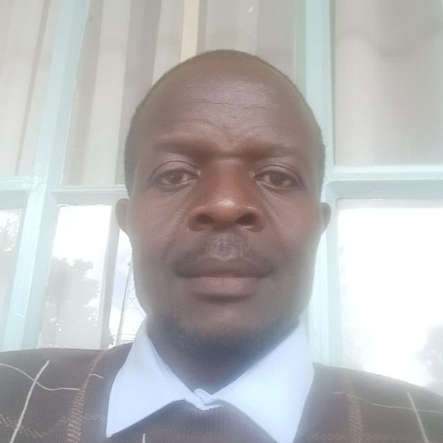
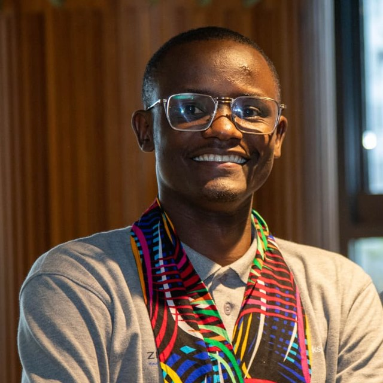

Awareness
Raising public awareness so people understand the choices before them and the power of their vote.
V.I.N.E - Africa works for informed public participation in making choices and decisions that represent the will of the people.
Voter Information Network and Education - Africa (V.I.N.E - Africa) is based in Nairobi, Kenya, and exists to facilitate the acquisition, transfer, strengthening and use of civic knowledge for an informed public.
Through awareness, education, monitoring and networking, we work towards a continent where public participation in making choices and decisions truly represents the will of the people. Our guiding message is simple: Your Choice Your Mandate.
Explore what we doFour services that help citizens understand, use and protect their voice.
Raising public awareness so people understand the choices before them and the power of their vote.
Civic education that helps people acquire and strengthen the knowledge they need to take part.
Our objectives follow directly from our mission: an informed public that can make choices and decisions representing the will of the people.
Help citizens gain the information they need to participate with confidence.
Share knowledge across communities, partners and networks.
Build on what people already know through continued education and monitoring.
Support an informed public that turns knowledge into choice and mandate.
OUR MISSION
To facilitate acquisition, transfer, strengthening and use of civic knowledge for an informed public.
OUR VISION
Informed public participation in making choices and decisions that represent the will of the people.
Meet the people behind V.I.N.E - Africa and our work for an informed public.

02
06Automatically rotates every 3 seconds
We would love to hear from you. Reach us by phone, email or visit our office in Nairobi.